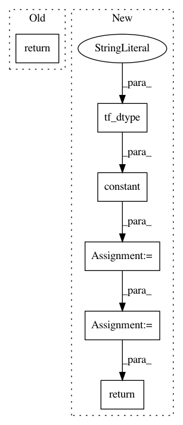

a3fe8bdf1c484e390dfe3947cc395372c0187589,tensorforce/core/distributions/beta.py,Beta,tf_sample,#Beta#Any#Any#,81
Before Change
sampled = beta_sample / tf.maximum(x=(alpha_sample + beta_sample), y=util.epsilon)
return self.action_spec["min_value"] + \
(self.action_spec["max_value"] - self.action_spec["min_value"]) * \
tf.where(condition=deterministic, x=definite, y=sampled)
def tf_log_probability(self, distr_params, action):
alpha, beta, _, log_norm = distr_params
action = (action - self.action_spec["min_value"]) / \
After Change
alpha_sample = tf.random_gamma(shape=(), alpha=alpha, dtype=util.tf_dtype(dtype="float"))
beta_sample = tf.random_gamma(shape=(), alpha=beta, dtype=util.tf_dtype(dtype="float"))
epsilon = tf.constant(value=util.epsilon, dtype=util.tf_dtype(dtype="float"))
sampled = beta_sample / tf.maximum(x=(alpha_sample + beta_sample), y=epsilon)
sampled = tf.where(condition=deterministic, x=definite, y=sampled)
min_value = tf.constant(
value=self.action_spec["min_value"], dtype=util.tf_dtype(dtype="float")
)
max_value = tf.constant(
value=self.action_spec["max_value"], dtype=util.tf_dtype(dtype="float")
)
return min_value + (max_value - min_value) * sampled
def tf_log_probability(self, parameters, action):
alpha, beta, _, log_norm = parameters
In pattern: SUPERPATTERN
Frequency: 3
Non-data size: 6
Instances
Project Name: reinforceio/tensorforce
Commit Name: a3fe8bdf1c484e390dfe3947cc395372c0187589
Time: 2019-02-06
Author: alexkuhnle@t-online.de
File Name: tensorforce/core/distributions/beta.py
Class Name: Beta
Method Name: tf_sample
Project Name: reinforceio/tensorforce
Commit Name: f19c4f5cfecdccd65a65f298fd26f17b9d21ad52
Time: 2019-06-13
Author: alexkuhnle@t-online.de
File Name: tensorforce/core/distributions/gaussian.py
Class Name: Gaussian
Method Name: tf_sample
Project Name: reinforceio/tensorforce
Commit Name: ee950b503eeed5aca3747a4bcf2a40f624b743a0
Time: 2019-01-21
Author: alexkuhnle@t-online.de
File Name: tensorforce/core/optimizers/synchronization.py
Class Name: Synchronization
Method Name: tf_step